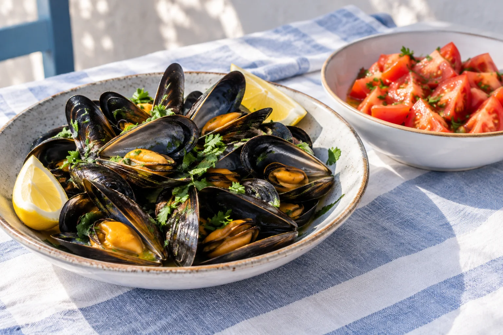

01
Entrantes
Sopa de marisco
8.00 €Sopa de tomate
7.00 €Ensalada mixta
7.50 €Pipirrana de pulpo
9.50 €Ensalada de langostinos
9.50 €Ensalada Cerdán
12.00 €Ensaladilla rusa
9.50 €Ensaladilla rusa a la gallega
13.00 €Ensalada de tomates
9.00 €Ensalada de pimientos
9.00 €
02